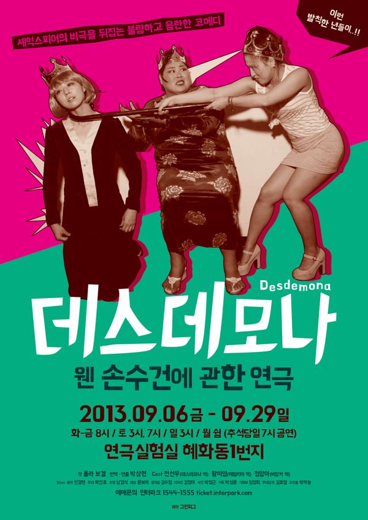

그린피그 > 아카이브 > 데스데모나-웬 손수건에 관한 연극
폴라 보겔 작, 박상현 연출

셰익스피어 〈오셀로〉의 사건들이 무대 밖에서 벌어지는 동안, 궁전 뒷방에서 데스데모나, 에밀리아, 비앙카 세 여자가 벌이는 '숨겨진 계략'에 관한 이야기. 폴라 보겔은 셰익스피어의 여자들을 남성의 결백한 희생자가 아니라 각자의 운명 앞에서 행동하는 사람으로 바꿔 놓고, 통렬한 풍자와 희극적 변신으로 셰익스피어 비극을 뒤집는다.
2013.9.6–26 / 연극실험실 혜화동1번지
작: 폴라 보겔
번역·연출: 박상현
음악: 민경현
무대: 박찬호
조명: 남경식
의상: 윤보라
움직임: 김수정
디자인: 김정아
사진: 박정근
기획: 박성윤, 임정희
무대감독: 김효영
조명 오퍼: 곽동현
음향 오퍼·조연출: 박하늘
출연: 전선우(데스데모나), 황미영(에밀리아), 정양아(비앙카)
이전: 〈빨갱이. 갱생을 위한 연구(가제)〉 | 다음: 〈공포〉
아카이브로 돌아가기